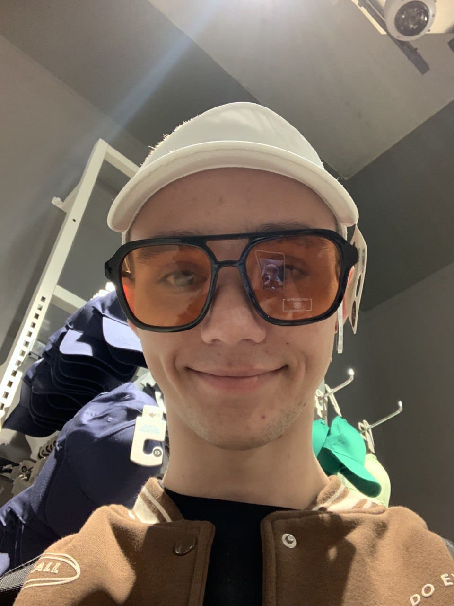

Hello everyone, my name is Dima, I'm a beginner programmer, this is my first site. On this site, I will tell you a little about myself.
I can tell a lot about myself, I go in for sports, I love motorcycles and cars, I am fond of programming. I have a little sister, her name is Katya, she is 6 years old. Because of the war, I had to leave Ukraine for Germany, where I lived for one year. That's all for now, I'll tell you more later.
In this block I will talk about my sporting achievements. I did judo for 8 years. At the moment I am actively involved in weightlifting and I plan to achieve a high result. Of my awards, I am the champion of the Donetsk region in judo, the champion of the Donetsk region in sumo and sambo.